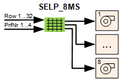
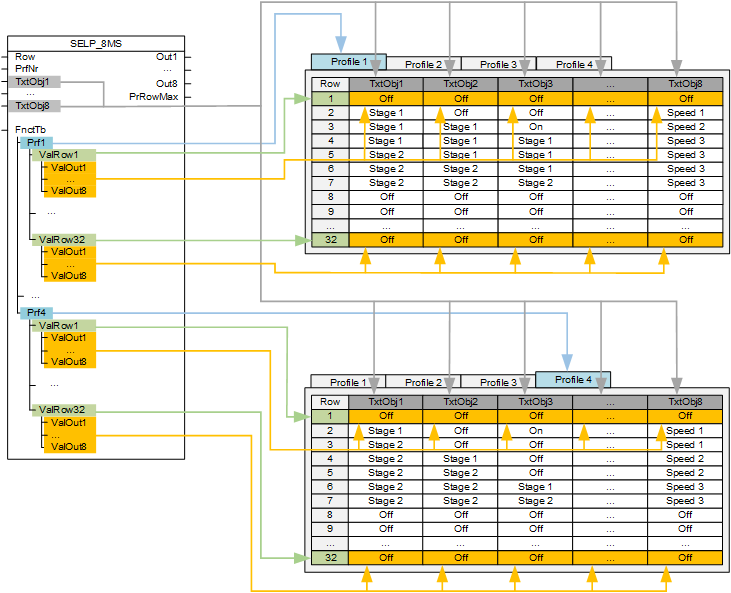
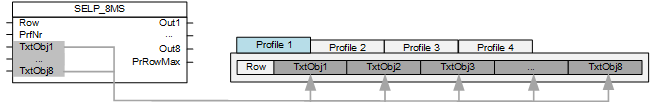
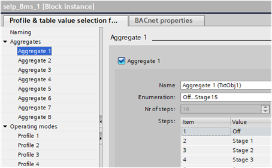
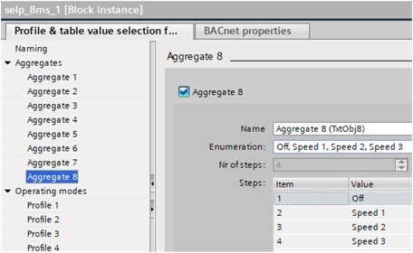
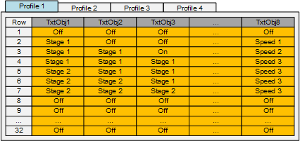
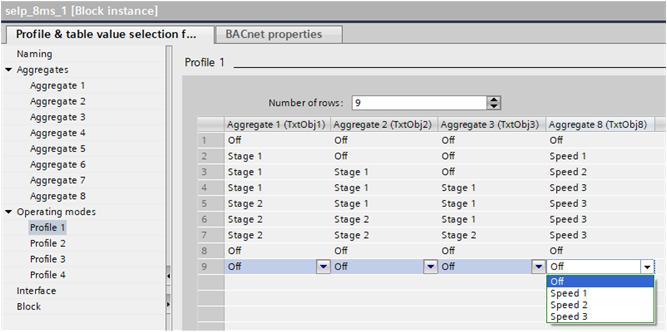

[SELP_8MS] 8 个多状态值的配置文件和表值选择
功能块 SELP_8MS 包括四个配置文件表，并根据所需的配置文件和行提供最多 8 个可配置的多状态值。

SELP_8MS 包括四个配置文件表，并根据配置文件和表中的行读取最多八个工厂组件的操作模式（多状态），并将其发送到相应的输出。
SELP_8MS 包含配置文件 1...4 的四个表。每个表最多包含 8 列（用于工厂组件 1...8）和最多 32 行（用于所需工厂组件操作模式）。
SELP_8MS 包括输入 [PrfNr] 上所需的配置文件 1...4 以及输入 [Row] 上所需的行。根据此信息读取设备组件 1...8 的操作模式，并将其作为枚举 1...x 发送到输出 [Out1]...[Out8]。
输出 [PrRowMax] 显示所选配置文件中配置值 >1 的最后一行的编号。
Pins and assignment in SELP_8MS
功能块 SELP_8MS 中的引脚在表中的分配如下：

该表有两个区域：
- Names
- Function table [FnctTb]
Names
表中最多可输入八个设备组件的操作模式。工厂组件的名称可以在输入 [TxtObj1] 至 [TxtObj16] 中输入。

Entry masks in the programming editor
在编程编辑器中，功能块Properties具有工厂组件的入口掩码（在 GUI“聚合”中）。
必须选择每个所需的设备组件 1...8（即勾选）。这将显示配置文件 1...4 的条目掩码中的设置和设备组件。
可以在字段中为每个工厂组件 1...8 输入名称Name。所有配置文件 1...4 使用相同的名称。
您可以选择预定义设置或“自定义”Enumeration。所选设置在配置文件 1...4 的单元格中显示为选择菜单。
Example
锅炉sequence operation具有三个热发生器：
对于三个热发生器来说，Enumeration为每个聚合选择“Off...stage 15”Aggregate 1..3.

Aggregate 8控制泵。该泵可以是三级泵或单独的泵组。Enumeration选择“关闭、速度 1、速度 2、速度 3”。


如果 [PrRowMax] 用于反馈信息，例如：根据功率平衡，具有最后所需操作模式的行可能仅具有值为 1 =“关闭”的行。
Function table
功能表 [FnctTb] 由四个表配置文件 1...4 组成。每行的操作模式在每个工厂组件的每个表中设置。
SELP_8MS 包括输入 [PrfNr] 上所需的配置文件 1...4 以及输入 [Row] 上所需的行。根据此信息读取设备组件 1...8 的操作模式，并将其作为枚举 1...x 发送到输出 [Out1]...[Out8]。
SELP_8MS 发送枚举1...x至输出 [Out1]...[Out8]。Enumeration 0 is not supported.在 [ValOut1]...[ValOut8] 上输入的值 < 1 将替换为值 1。
对于所选配置文件，输入 [Row] 处的值最多限制为 [PrRowMax]。

Entry masks in the programming editor
在编程编辑器中，功能块Properties有植物组件的入口掩码。
可以在每个小区的每个配置文件上单独设置操作模式。
每个单元格中的选择菜单对应于设置Enumeration在工厂组件 1...8 的条目掩码中（在 GUI 聚合 1...8 中）。
示例：三个 2 级热发生器和一个泵组或 3 级泵的可能开启策略。

Example:
如果输入 [PrfNr] 配置文件 1 和输入 [Row] 行 5 被请求，则您有以下选择：
- Aggregate 1 = Stage 2 ⇨ 3 is provided to [Out1]
- Aggregate 2 = Stage 1 ⇨ 2 is provided to [Out2]
- Aggregate 3 = Stage 1 ⇨ 2 is provided to [Out3]
- Aggregate 8 = Speed 3 ⇨ 4 is provided to [Out8]
Outputs for low and high rows
输出 [MuxRowLo] 和 [MuxRowHi] 提供所选配置文件中较低和较高行的信息。如果当前行是配置文件中的第一行，则 [MuxRowLo] 提供当前行的信息。如果当前行是配置文件中最后配置的行，则 [MuxRowHi] 提供当前行的信息。
当在输出 [MuxRowLo] 和 [MuxRowHi] 处提供较低行和较高行的信息时，会对其进行编码和复用。为了解码信息，DMUX_101可以使用。为了正确解码，DMUX_101 必须配置为 [NumOutR] = 0、[NumOutMs] = 8、[NumOutB] = 0。
输入 | 描述 | 数据类型 | 默认值 |
|---|---|---|---|
Row | Row 确定配置文件表中使用的行。 | 整数 | 1 |
PrfNr | Profile number 确定使用哪个配置文件表。 | 整数 | 1 1…4 |
TxtObj1...TxtObj8 | Text for object 1...Text for object 8 工厂组件的描述或名称。 | 细绳 | ‘’ |
FnctTb | Function table 确定每个配置文件和每行上的设备组件的操作模式。 | 结构 | - |
FnctTb | Profile 1…Profile 4 配置文件的选择 | 结构 | - |
FnctTb | Value row 1...Value row 32 行的选择 | 结构 | - |
FnctTb | Value output 1...Value output 8 连续设备组件 1...8 的操作模式设置值。 | 整数 | 1 |
输出 | 描述 | 数据类型 | 默认值 |
|---|---|---|---|
Out1…Out8 | Output 1...Output 8 工厂组件 1...8 操作模式的枚举输出 | 整数 | 1 |
PrRowMax | Present maximum row显示输入值 > 1 的最后一行的编号。 | 整数 | 0 |
MuxRowLo | 低复用行 提供所选配置文件中下一行的信息。 | 真实的 | 0.0 |
MuxRowHi | 高复用排 提供所选配置文件中较高行的信息。 | 真实的 | 0.0 |